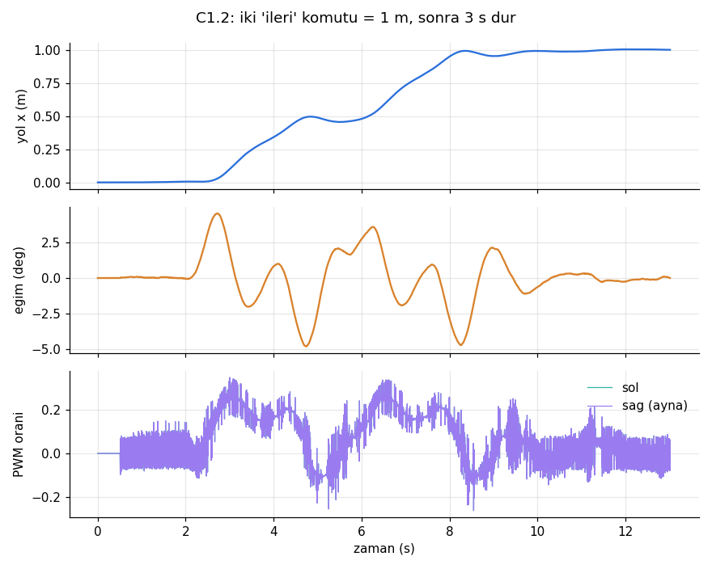
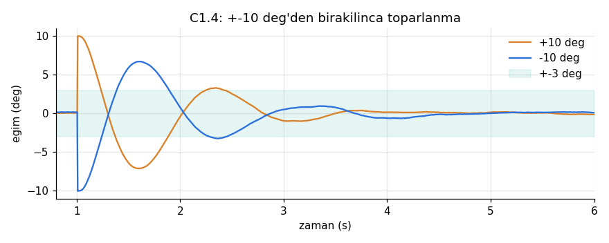
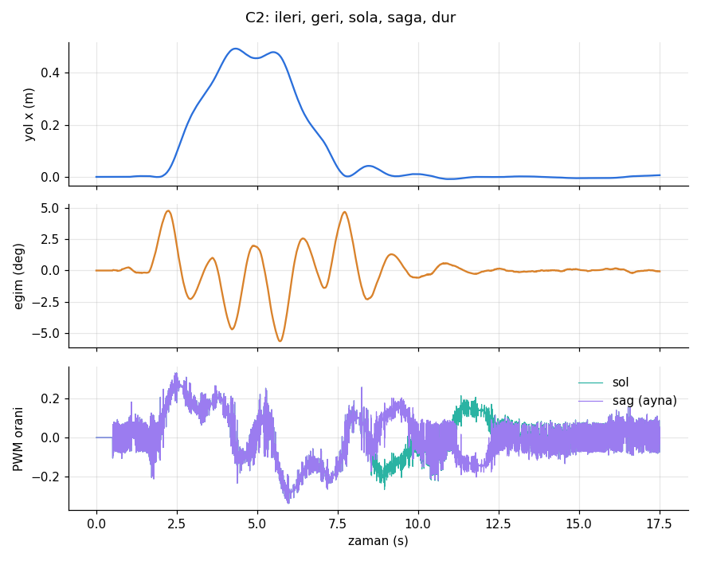
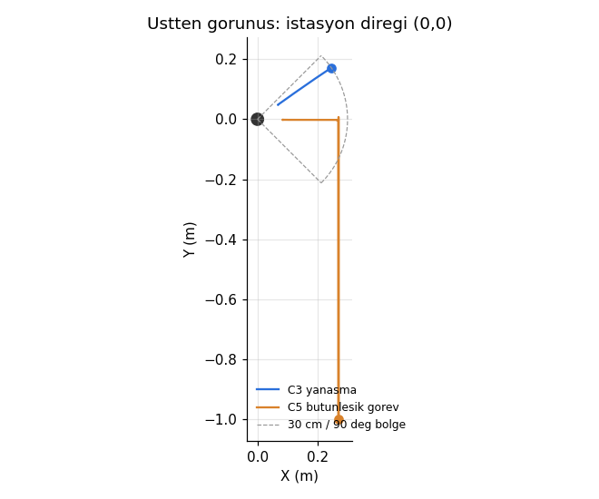

Yalnız robot: parçalar, güç ve sinyal şemaları, ana kart yerleşimi, kablo listesi, şasi ölçüleri, şarj teması, tüm firmware kodu ve testler. Eldiven, istasyon ve telefon uygulaması bu dosyada yok; robotun onlarla konuştuğu arayüzler var.
Fiyatlar takım sitesinden (9–10 Ekim 2026, KDV dahil). "Yeni" işaretliler bu dosyanın eklemeleri. Kütleler tahmin; parça gelince tartıp tools/mass_budget.py'ye yazın.
| Parça | Adet | Birim TL | Satıcı | Not |
|---|---|---|---|---|
| Beyin ve sensörler | ||||
| ESP32 WROOM-32D geliştirme kartı (38 pin) | 1 | 455 | Robotistan | WROVER değil: GPIO16/17 kullanılıyor |
| MPU6050 GY-521 | 1 | 109 | Robotzade | Kat 1 üstü, teker ekseni hizasında, ortada |
| 38 kHz IR alıcı kartı (VS1838B) | 2 | 41 | Robotistan | TSOP1838 almayın: 3,3 V'ta çalışmaz |
| Hareket | ||||
| JGB37-520 12 V 530 RPM, Hall enkoderli | 2 | 639 | Direnc.net | 6 mm D mil |
| BTS7960 motor sürücü kartı | 2 | 162 | Robotzade | VCC → 3,3 V |
| 37 mm motor tutucu (L braket) | 2 | 114 | Keskinler | |
| 65 mm lastik tekerlek | 2 | 175 | Robotistan | Göbek 6 mm D'ye uymalı |
| 6 mm kaplin (2'li) | 1 | 170 | Robotistan | Göbek mile doğrudan oturuyorsa alınmaz |
| Güç | ||||
| Orion 18650P 2450 mAh 12C | 3 | 201 | Direnc.net | Üçü aynı partiden |
| 18650 3'lü pil yuvası | 1 | 47 | Ulutaş | İçten seri |
| 3S 10 A BMS (HX-3S-01) | 1 | 102 | Motorobit | Şartname gereği zorunlu |
| LM2596 5 V 3 A regülatör | 1 | 161 | Robotistan | Ayarlıysa önce 5,0 V'a ayarlayın |
| Bıçak sigorta yuvası + 5 A (yedek 7,5 A) | 1 | 40 | Motorobit | Zorunlu |
| Acil stop Chint NP2-BE102, NC, 10 A | 1 | 300 | Motorobit | Zorunlu, kat 3'te |
| WAGO 221-415 (5'li) | 2 | 30 | Robotistan | WAGO-12V ve WAGO-GND |
| XT60 takımı | 2 | 26 | Direnc.net | |
| SR5100 Schottky diyot | 3 | 6 | Motorobit | Şarj girişi |
| 1000 µF 25 V düşük ESR elektrolitik yeni | 1 | ~20 | Karaköy | Motor hattı (C5) |
| 18 AWG silikon kablo kırmızı / siyah, 1 m | 2+2 | 35 | Motorobit | |
| Ana kart ve bağlantı | ||||
| 5×10 cm delikli plaket | 1 | 16 | Direnc.net | |
| Dişi + erkek pin header 1×40 | 1 | 45 | Robotistan | ESP32 sokete takılır |
| Dirençler: 100k ×3, 27k ×2, 33k ×1 33k yeni, 10k ×1 | — | ~30 | Robotistan | ¼ W |
| Kondansatör: 100 µF 16 V ×1, 100 nF ×3 | — | ~15 | Robotistan | |
| 2'li 5,08 mm PCB klemens | 3 | 8,72 | Direnc.net | J1, J9, J10 |
| Dişi-dişi jumper 20 cm (40'lı) | 1 | 59 | Direnc.net | Yalnız sinyal |
| Gövde, yük, şarj teması | ||||
| 3 mm pleksi (3 kat + V-yuva + kutu yuvası) | 1 | 400 | Trendyol | İstasyonla ortak levha |
| M3 30 mm + 50 mm dişi-dişi distans | 8+8 | 9,5 / 13,5 | Motorobit | Her köşede 30+50 = 80 mm |
| M3 10 mm vida (10'lu) | 4 | 7,5 | Motorobit | |
| 5 mm pogo pin (10'lu) robot tarafında | 1 | 87 | Direnc.net | V-yuvada 2 adet, istasyonla paket ortak |
| Kapaklı ilaç kutusu | 1 | 60 | Eczane | |
Robot tarafının toplamı yaklaşık 6.050 TL (pleksi ve pogo paketi istasyonla paylaşılırsa ~5.700 TL).
Tek beyin ESP32. Çekirdek 1 denge döngüsünü 200 Hz koşturur; çekirdek 0 radyoları (eldivenden ESP-NOW, telefona BLE) ve seri konsolu yönetir.
Her kutuda gerçek uç adları var. Sigorta, regülatörü ve acil stopu birlikte korur. Acil stop yalnız motor hattını keser; ESP32 açık kalır. Şarj girişi sigortayı atlar, çünkü şarj kartı akımı zaten sınırlar.
Kullanılmayan pinler: 0, 2, 5, 12, 15 açılış ayar pinleri (2 yalnız karttaki LED); 6–11 flash belleğe ait. 34–39 yalnız giriş, iç pull-up yok.
| Pin | Görev | Yapılandırma |
|---|---|---|
| 19 | MPU6050 INT | Yükselen kenar kesmesi, 200 Hz, denge döngüsünü tetikler |
| 21 / 22 | I2C SDA / SCL | 400 kHz; GY-521 üstünde 4,7k pull-up var |
| 27, 14 / 16, 17 | Sol / sağ RPWM, LPWM | LEDC kanal 0–3, 20 kHz, 10 bit. GPIO14 açılışta kısa darbe verir; EN kapalıyken zararsız. |
| 4 | EN (iki kart) | Çıkış; 10k GND'ye: açılışta ve ESP32 sıfırlanırken motorlar kapalı |
| 32, 33 / 25, 26 | Enkoder A, B | PCNT dörtlü sayım (4x), 1,25 µs süzgeç, iç pull-up |
| 36 / 39 | IR göz sol / sağ | PCNT düşen kenar, 12,8 µs süzgeç (errata 3.11'deki 80 ns darbeleri sayılmaz) |
| 35 / 34 | Pil / şarj pimi gerilimi | ADC1, 11 dB, 50 Hz, analogReadMilliVolts |
| 23 | Acil stop sonrası motor hattı | Dijital giriş; 0 ise robot BEKLE moduna geçer |
| 2 | Karttaki LED | Dengede sabit, beklerken yanıp söner. Şarj göstergesi değil. |
Üstten görünüş, 2,54 mm aralık, 20 × 38 delik. ESP32 iki sıra dişi header üstünde; arızada sökmeden değişir. Anten kart kenarından taşar, altından kablo geçirmeyin. Kalın çizgiler lehim tarafındaki kalaylı hatlar.
| Header | Pin sırası (beyaz kare = 1. pin) | Gittiği yer |
|---|---|---|
| J1 | +5V, GND | LM2596 OUT+ / OUT− (22 AWG) |
| JP1 | 2 pin + jumper | 5 V'u ESP32'ye verir. Kod yüklerken çıkarın (USB ve LM2596 çakışmasın). |
| J2 | 3V3, GND, G22, G21, G19 | MPU6050: VCC, GND, SCL, SDA, INT |
| J3 | G27, G14, G4, 3V3, GND | BTS sol: RPWM, LPWM, R_EN+L_EN (köprülü), VCC, GND. IS uçları boş. |
| J8 | G16, G17, G4, 3V3, GND | BTS sağ: aynı sıra |
| J4 | 3V3, GND, G32, G33 | Sol enkoder: VCC, GND, C1 (A), C2 (B) |
| J5 | 3V3, GND, G25, G26 | Sağ enkoder |
| J6 / J7 | 3V3, GND, G36 / G39 | Sol / sağ IR göz: VCC, GND, OUT |
| J9 | 1: pil, 2: şarj pimi | 1 → WAGO-12V (W19), 2 → üst şarj pimi (W23) |
| J10 | 1: motor hattı | Acil stop NC2 / BTS sol B+ (W43). GND J1'den. |
Takım sitesinin numaraları korunur. W20–W23 şarj teması değiştiği için yeniden yazıldı, W41–W44 yeni. Her kablonun iki ucuna numarasını kâğıt bantla yazın. Güç hattında jumper kullanmayın; her lehime makaron.
| No | Nereden | Nereye | Taşıdığı | Kablo | Bağlantı |
|---|---|---|---|---|---|
| Pil ve BMS (bağlama sırası için bölüm 07) | |||||
| W1 | Hücre 1 − | BMS B− | Pil − | 18 AWG siyah | Lehim |
| W2 | Hücre 1+/2− köprüsü | BMS B1 | 3,7 V denge | 22–26 AWG | Lehim (yuvanın köprüsüne) |
| W3 | Hücre 2+/3− köprüsü | BMS B2 | 7,4 V denge | 22–26 AWG | Lehim |
| W4 | Hücre 3 + | BMS B+ | 12,6 V | 18 AWG kırmızı | Lehim |
| W5 | BMS B+ (= P+) | XT60 dişi + | Paket çıkışı | 18 AWG kırmızı | Lehim + makaron |
| W6 | BMS P− | XT60 dişi − | Paket çıkışı | 18 AWG siyah | Lehim + makaron |
| 12 V dağıtım | |||||
| W7 | XT60 erkek + | Sigorta girişi | 12,6 V | 18 AWG kırmızı | Lehim |
| W8 | Sigorta çıkışı | WAGO-12V | Sigortalı 12 V | 18 AWG kırmızı | Klemens |
| W9 | WAGO-12V | Acil stop NC1 | 12 V | 18 AWG kırmızı | Vidalı |
| W10 | Acil stop NC2 | BTS sol B+ | Motor beslemesi | 18 AWG kırmızı | Vidalı |
| W11 | BTS sol B+ | BTS sağ B+ | Motor beslemesi | 18 AWG kırmızı | Zincirleme |
| W12 | WAGO-12V | LM2596 IN+ | 12 V, stoptan önce | 18 AWG kırmızı | Lehim |
| W13 | XT60 erkek − | WAGO-GND | GND | 18 AWG siyah | Klemens |
| W14 | WAGO-GND | BTS sol B− ve sağ B− | GND | 18 AWG siyah ×2 | Vidalı |
| W15 | WAGO-GND | LM2596 IN− | GND | 18 AWG siyah | Lehim |
| W16 | BTS sol M+ / M− | Sol motor M1 / M2 | Motor | Motorun kablosu, bükülü | Vidalı |
| W17 | BTS sağ M+ / M− | Sağ motor M1 / M2 | Motor | Motorun kablosu, bükülü | Vidalı |
| W18 | LM2596 OUT+ / OUT− | Ana kart J1 | 5 V | 22 AWG | Klemens |
| W19 | WAGO-12V | J9-1 | Pil ölçümü | 26 AWG | Klemens |
| Şarj teması (değişti) | |||||
| W20 | Üst pogo pim (+) | SR5100 anot | Şarj + | 18 AWG kırmızı | Lehim |
| W21 | SR5100 katot (çizgili) | XT60 erkek + hattı (W7 başı) | Şarj +, sigortadan önce | 18 AWG kırmızı | Lehim + makaron |
| W22 | Alt pogo pim (−) | WAGO-GND | Şarj − | 18 AWG siyah | Klemens |
| W23 | Üst pogo pim (+) | J9-2 | Şarj algılama | 26 AWG | Klemens |
| Sinyal (dişi-dişi jumper) | |||||
| W24 | J2 | MPU6050 | I2C + INT | 5 jumper | Header, AD0 → GND |
| W25 | J3 | BTS sol | PWM + EN | 5 jumper | Header |
| W26 | J8 | BTS sağ | PWM + EN | 5 jumper | Header |
| W27 | J4 | Sol enkoder | Enkoder | 4 jumper | Motor soketi |
| W28 | J5 | Sağ enkoder | Enkoder | 4 jumper | Motor soketi |
| W29 | J6 | Sol IR göz | IR | 3 jumper | Header |
| W30 | J7 | Sağ IR göz | IR | 3 jumper | Header |
| Yeni | |||||
| W41 | BTS sol B+ | C5 + (1000 µF) | Motor hattı | Kısa, 18 AWG | Vidalı, kutup dikkat |
| W42 | C5 − | BTS sol B− | GND | Kısa, 18 AWG | Vidalı |
| W43 | BTS sol B+ | J10-1 | Motor hattı algılama | 26 AWG | Klemens |
| W44 | Ana kart GND rayı | WAGO-GND | Sinyal GND referansı | 22 AWG | J1 üzerinden |
Motor kablolarını iki teli birbirine sararak götürün; enkoder ve I2C kablolarından en az 2 cm uzak tutun. Jumper uçlarını ilk denemeden sonra ESP32 tarafında sıcak silikonla sabitleyin; denge titreşimi gevşetir.
Üç kat 3 mm pleksi, 150 × 110 mm, köşelerde 30+50 mm distans (katlar arası 80 mm). Ölçüler milimetre; z, teker ekseninden yukarı. Motorlar alt katın altına L braketle asılır, mil ekseni teker eksenidir.
Sitedeki öneri 80–120 mm. Simülasyon 54–115 mm arasında geçti. Daha yavaş düşen (kolay dengelenen) robot isterseniz pili kat 3'e alın.
Robot önündeki V-yuvayla istasyonun yuvarlak direğine yaslanır. Direk yuvarlak olduğu için hangi açıdan gelirse gelsin temas aynıdır; V-yuva yanal ±3 cm hatayı kendisi ortalar. Pimler robotta, halkalar direkte. Pimler SR5100 diyotun arkasında olduğu için robotta açıkta pil gerilimi yoktur.
Robot MAC görünmeli.stat ve telemetride v değerini multimetreyle karşılaştırın; fark %3'ten büyükse vscale=.mtest: önce sol, sonra sağ teker 1 s ileri.x ≈ 2,04 m.tilt artar; sola çevirin yaw artar.firmware/robot klasörünü açın. platformio.ini ESP32 platform 6.9.0 (Arduino 2.0.17) ve NimBLE 1.4.3'ü kendisi indirir.Derleme: flash %80, RAM %17, uyarı yok.
RobotLogic::step() çıkışı: EN ve iki PWM oranı.| Mod | Ne yapar | Geçiş |
|---|---|---|
| BEKLE | Motorlar kapalı | Elle ±3° içinde 0,5 s tutulunca DENGE. Şarj gerilimi varsa ŞARJ. |
| DENGE | LQR denge; eldiven adımları | Görev uygunsa ve işaret görülürse YANAŞMA. |θ| > 40° → DÜŞTÜ. Acil stop → BEKLE. |
| YANAŞMA | ARA → HİZALAN → YAKLAŞ → YERLEŞ | Pimde 9 V'tan fazla 0,1 s → 4° öne eğilip motorları keser → ŞARJ. 60 s'de bitmezse DENGE. |
| ŞARJ | Motorlar kapalı, direğe yaslı | Eldivenle "geri" → DENGE + 0,5 m geri. Şarj 2 s kesilirse BEKLE. |
| DÜŞTÜ | Motorlar kapalı | |θ| < 20° olunca BEKLE. |
| Seri / BLE komutu | Etki |
|---|---|
| stat | Döngü süresi, IMU hata, eldiven paket/kayıp sayısı |
| mtest | BEKLE'deyken sol, sonra sağ teker 1 s %15 ileri |
| task=0..3 | Statik / yönlendirme / şarj / bütünleşik (NVS'e kaydedilir) |
| glove=step | cont | Adım modu (0,5 m / 90°) ya da sürekli sürüş |
| cal | Şu anki eğimi denge noktası kabul et (NVS) |
| vscale=1.000 | Pil ölçüm katsayısı |
| Parametre | Dosya | Şu an | Nasıl bulunur |
|---|---|---|---|
| Gövde kütlesi, KM, atalet | tools/mass_budget.py | 1,245 kg, 72 mm | Parçaları tartın; KM için robotu ipe iki noktadan asın |
| Enkoder sayım/tur | cdtp_config.h | 836 | Tekeri 10 tur çevirip sayımı okuyun |
| İz genişliği | cdtp_config.h + lqr_design.py | 0,190 m | Teker temas noktaları arası; yerinde 10 tur dönüp enkoder farkından |
| Motor yönleri, enkoder yönleri | cdtp_config.h | sağ ters | mtest ve elle çevirme |
| IMU eksenleri | imu_filter.h AxisMap | X ileri, Z yukarı | MPU6050'yi X ileri bakacak yapıştırın, tilt ve yaw işaretini kontrol edin |
| Olu bölge gerilimi | cdtp_config.h | 0,45 V | Teker havada; PWM'i yavaş artırıp dönmeye başladığı gerilim |
| Denge noktası ofseti | NVS (cal) | 0 | Robotu en rahat durduğu açıda tutup cal |
| Motor Ke, R | lqr_design.py | 0,216, 4,5 Ω | Ke = 12 V / boşta hız (rad/s); R = 12 V / kilit akımı |
Bir değer değişince: python tools/lqr_design.py → bash tools/run_sim.sh (hepsi geçmeli) → firmware'i yükleyin. Final öncesi main.cpp'de FREEZE = true.
| Test | Ölçülen | Sonuç |
|---|---|---|
| Enerjisiz ±10°'den bırakma | 0,30 s'de 40°'yi geçer | geçti |
| C1.1 30 s statik denge, kutulu | eğim ≤ 0,52°, kayma 1,4 cm | geçti |
| C1.2 / C1.3 1 m ileri / geri + 3 s dur | 1,002 m / 1,002 m; durmada ≤ 12 mm | geçti |
| C1.4 ±10°'den toparlanma | 1,42 s / 1,44 s | geçti |
| Acil stop | BEKLE, motor çıkışı kapalı | geçti |
| C2 ileri / geri / sola / sağa / dur | 0,494 m · 0,491 m · 90,0° · 90,0°; tepki ≤ 0,8 s | geçti |
| Eldiven sustu | adım 0,30 m'de kesildi, durdu | geçti |
| C3 yanaşma, 63 başlangıç | 63/63, en uzun 14,8 s; temas → motor kesme 0,5 s | geçti |
| C5 bütünleşik × 4 | 4/4, hedefte 5,6 s bekledi | geçti |
| 40 rastgele robot (kütle ±25 %, KM −25/+60 %, motor ±20 %, pil 10,4–12,6 V) | statik 40/40, toparlanma 40/40 (≤ 1,7 s), 1 m 40/40 | geçti |




Simülasyon gerçek robotun yerini tutmaz. Gerçek robotta ilk denge denemesini kutusuz, iki el yakında yapın.
Robotta çalışan her dosya. Ortak çekirdek (common/cdtp_core) robot firmware'inin parçasıdır; protocol.h ve gesture.h eldivenle paylaşılır. Her dosya açılır ve kopyalanır.